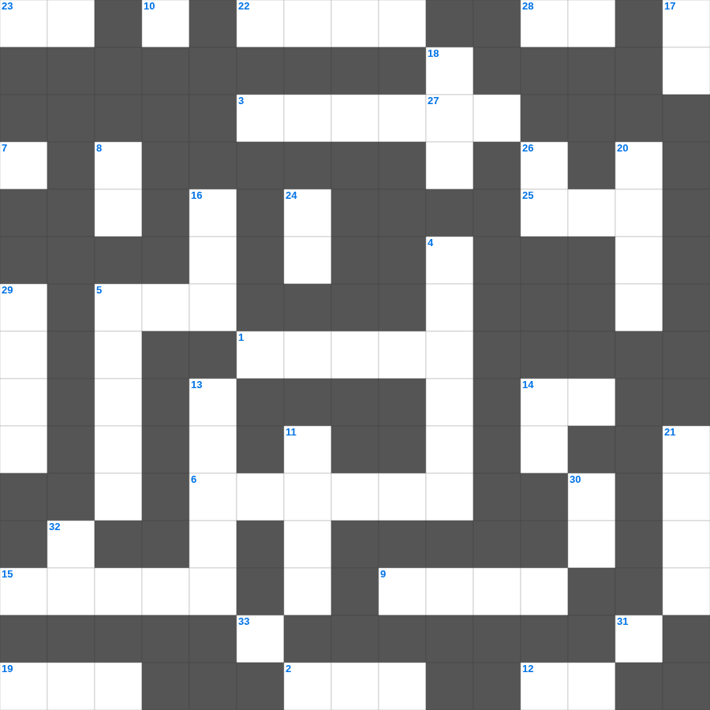

예수님의 새 계명
📌 서비스 정의
십자가로세로는 교회 주보와 주일학교에서 사용할 수 있는 성경 기반 가로세로 퍼즐 서비스입니다. 성경 인물, 사건, 핵심 구절을 바탕으로 제작되었습니다. 온라인 풀이 및 인쇄 기능을 제공합니다.
무료로 즐기는 예수님의 예수님의 주일학교 퀴즈! 35개의 힌트로 구성된 가로세로 낱말 퍼즐입니다. PC와 모바일 모두 지원되며, 정답을 바로 확인할 수 있어 혼자서도 쉽게 풀 수 있습니다.

📝 가로 힌트
1. 언약궤 안에 들어있는 세 가지 중 하나
2. 행함이 없는 믿음은 그 자체가 이것이라
3. 다윗이 밧세바를 범하고 나단에게 들은 말
5. 엘리야가 바알 선지자와 대결한 산
6. 지붕을 뚫고 내려온 병자를 고치신 사건
7. 낮을 주관하게 하신 큰 광명체
9. 성경 인물 중 가장 장수한 사람은?
10. 세상 죄를 지고 가는 하나님의 어린 이것
12. 반석 위에 지은 집과 이것 위에 지은 집
14. 선한 이것은 양들을 위하여 목숨을 버리거니와
15. 열 가지 재앙 중 마지막 재앙
19. 어린아이가 가져온 보리떡의 개수
22. 노동자 하루 품삯에 해당하는 은화
23. 하나님의 이름을 이것되이 일컫지 말라
25. 그물에 가득 찬 각종 이것
28. 여호와 이것: 평강의 하나님
33. 가인이 아벨을 죽인 도구(전통적 해석)
📝 세로 힌트
4. 길가, 돌짝밭, 가시떨기, 좋은 땅 이야기
5. 아브라함의 고향
8. 등불을 들고 신랑을 기다리는 열 명의 이것
11. 떡 다섯 개와 물고기 두 마리로 오천 명을 먹이심
13. 바울이 유두고를 살린 사건
14. 예수님의 지상 직업
16. 모세가 십계명을 받은 산
17. 이스라엘 열두 지파를 상징하는 보석들
18. 초대 교회에서 구제를 위해 세운 일곱 이것
20. 예수님이 가르쳐 주신 기도
21. 기름 부음 받은 자
24. 데살로니가 사람들이 베레아 사람보다 더 간절히 본 것
26. 바다의 물고기와 이것들
27. 믿음 소망 사랑 중 제일은 이것
29. 우리의 신앙 고백문
30. 하나님을 경외하는 것이 이것의 근본
31. 넷째 날 만드신 밤의 주관자
32. 다윗이 왕이 되기 전의 직업
🧑🏫 교회 교육 자료 활용
이 퍼즐은 주일학교 교재 추천 자료로 활용할 수 있고, 주일학교 주보에 넣기 좋은 분량으로 구성되어 있습니다. 수업용 주일학교 교안에 활동지로 붙이거나, 예배 후 복습용 주일학교 공과교재로 바로 사용할 수 있습니다.
🏷️ 키워드
예수님의 주일학교 퀴즈, 예수님의, 십자가로세로, 성경퀴즈, 말씀퀴즈, 가로세로퍼즐, 주일학교 교재 추천, 주일학교 주보, 주일학교 교안, 주일학교 공과교재